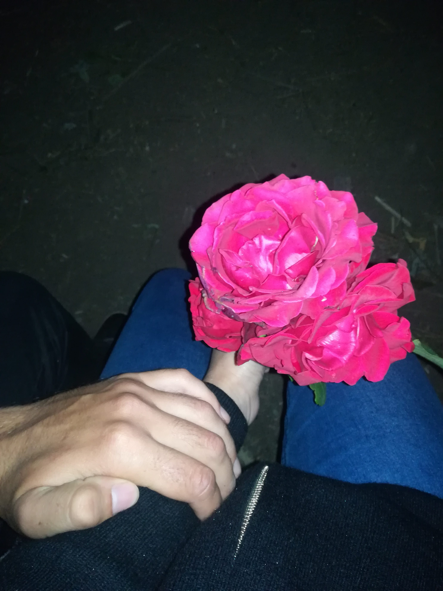

Солнце моё, я понимаю, что это выглядит смешно и нелепо, но я решил таким образом попытаться блеснуть своей скупой оригинальностью. Да, этот сайт не такой прям уж супер красочный и яркий, я даже не знаю, как он будет выглятеть на Твоём телефоне
Радость моя, нет таких слов, которыми можно было бы выразить мою любовь к Тебе. Мы вместе уже полтора года. Эта цифра уже довольно таки серьёзная, и она обязательно выльется и в 30, и в 40, и 50 лет нашей бесконечной любви. Сколько было пойдено, сколько ещё впереди... Перед нами огромный мир, которым мы должны наслаждаться сполна, вместе! Каждый раз пишу, мол "Столько уже моментов было пережито вместе.." А ведь их с каждым разом всё больше и больше! Рядом с Тобой я чувствую себя самым счастливым человеком на Земле!
В нашей с Тобой жизни пройдена очередная глава, глава из огромнейшей, толстенной книги, на прочтение которой уйдёт вся жизнь, ведь её размер - это и есть вся жизнь. Наша жизнь.
С каждым новым днём я люблю Тебя всё больше и больше. Я всё более безума от Тебя. Ты ведь самая прекрасная девочка на это планете. Ты ведь моя...
Мы так часто мечтаем о наших совместных детях.. И мне становится невероятно тепло от этих мыслей. Утро, кухня, завтрак, и к нам присоединяются эти сонные, милые, только что поснувшиеся личики... Господи, разве не это настоящее, искреннее счастье, ради которого стоит вообще жить и стремиться к чему то.
Ты ведь уникальна. Таких как ты не существует. Ты та самая принцесса, которая села на трон в моём сердце. Принцесса, которая останется там навсегда! Я безумно жду этого момента, когда наконец я никогда не покину Тебя. Не отпускать друг друга, никуда! Никогда!
Я никогда не устану повторять, что не существует таких слов, которые могли бы описать всю мою любовь к Тебе! Да я уже говорил это. Но чорт возьми, не существует, не существует. Это чувство, которое способно горы сворачивать. Ты ведь знаешь, я ради Тебя на всё готов
Господи, а Твои глазки, они ведь... в можно просто напросто утонуть. В своей жизни я не встречал ещё человека с более красивыми глазами. Я готов смотреть в них вечно... Как бы примитивно это не звучало, но бесконечно можно смотреть на 3 вещи: Как горит огонь, как течёт вода (ты тоже) и конечно же как играет глазками моя Виктория Дорохова (Кононенко)
А помнишь как была сделана эта фотография... Конеееечно помнишь) Господи, тот вечер был незабываемым. Прошалили всё на свете, даже Путина.. Но это даже не главное. Самое главное то, что мы были рядом! И наслаждались присутствием друг друга. Господи, как же я был счастлив в ту ночь, это было как будто бы во сне...
Ну и как же без юююбочкииии. Господи, как же я сейчас жалею, что не просил Тебя надевать её чаще... (PS: на фото похищение Витьки..)
Как ты понимаешь, я решил немного освежить наши моменты совместными фотографиями. Поэтому...
Мир глазами Витьки...
Те самые моменты у костра...
Секас, просто секас...
И тут я сказал "ДА"....
Чортовы малолетки...
Солнышко, мы уже можем сидеть и просто бесконечно вспоминать эти прекрасные пройденные моменты. Я просто не могу вообразить себе, сколькоооо их впереди. Всё меняется, кроме нашей любви,она такая же безумная. Мы будем идти вместе, не смотря ни на что. Мы ведь сильные. Ничего не бывает просто так, надо вкалывать. Но мы сможем. У нас будет всё. Я буду для Тебя самым любящим и самым верным мужем. Я ведь всегда так старался быть для Тебя самым лучшим. Чтобы ты могла чувствовать себя спокойно и уверенно вместе со мной. Ты ведь всё для меня. Помни всегда, что ты лучше всех. Моя любовь к Тебе, как эта роза, только она никогда не завянет.